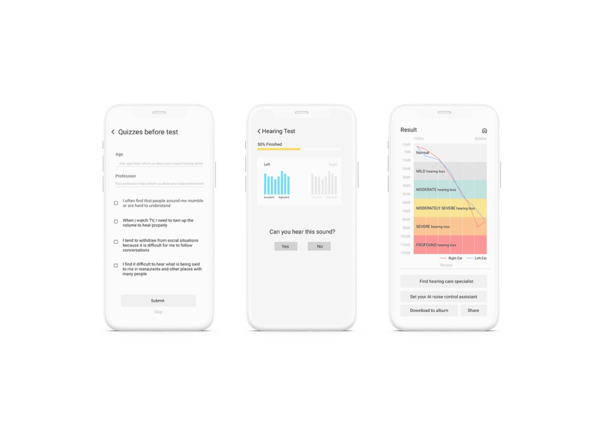
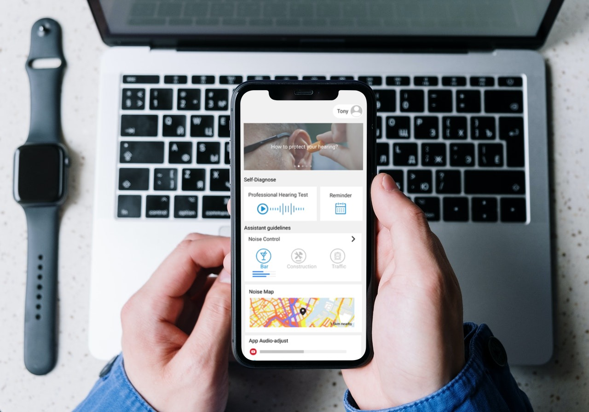

HearOn
"Reestablish users confidence by helping them find a solution to prevent further hearing loss."
Facts about deafness and hearing loss
How I found target users?
First, I found that cause factors can be encountered at different periods across the life span.
Secondly, I listed the people who are most at risk. They're
- Newborn babies and infants.
- Pre-school and school-age children.
- People exposed to noise or chemicals at work.
- People receiving ototoxic medicines.
- Older adults
We know our that inborn or natural aging needs more solution professional diagnosis and
treatment, while through a mobile app we have limitations such as precision, not personalised etc.
Thus, we narrowed our target users to 1. 16+ users who are addicted to wear earphones or play sound in a high-volume.
2. People long-time exposed to conditions which highly probably cause hearing damage, such as DJ, building site workers.
3.Users with degenerative diseases such as general aging.
Problems
- Existing hearing apps offer hard-to-understand tests and reports for an unspecialized person.
- Lack of knowledge about how to form good hearing habits and prevent hearing loss in daily smartphone use.
- A quick and easy means to get in touch with professional doctors
Solutions
- Easy self-diagnosis tool which provides intuitive report
- Our AI algorithms can auto-adjust volume for users based on their hearing test records
- Easy consulting with audiologists for users
What we design

